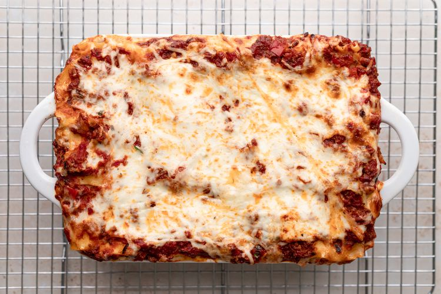

Home
Lasagna

Description
Everyone loves a good lasagna, right? It's a great way to feed a crowd and
a perfect dish to bring to a potluck. It freezes well. It reheats well.
Leftovers will keep you happy for days.
Simply Recipes reader Alton Hoover sent me his favorite recipe for
lasagna, which he has been cooking since his college days. Alton's
original recipe created enough lasagna for a small army so I halved it.
What is posted here will easily serve eight people.
Ingredients
For the meat sauce
- 2 teaspoons extra virgin olive oil
- 1 pound ground beef chuck
- 1/2 medium onion, diced (about 3/4 cup)
-
1/2 large bell pepper (green, red, or yellow), diced (about 3/4 cup)
- 2 cloves garlic, minced
- 1 (28 ounce) can good-quality tomato sauce
- 3 ounces tomato paste (half a 6-ounce can)
- 1 (14 ounce) can crushed tomatoes
- 2 tablespoons chopped fresh oregano, or 2 teaspoons dried oregano
- 1/4 cup chopped fresh parsley
- 1 tablespoon Italian seasoning
- 1 pinch garlic powder and/or garlic salt
- 1 tablespoon red or white wine vinegar
- 1 tablespoon to 1/4 cup sugar (to taste, optional)
- Salt
To assemble the lasagna
-
1/2 pound dry lasagna noodles (requires 9 lasagna noodles unbroken)
- 15 ounces ricotta cheese
- 1 1/2 pounds (24 ounces) mozzarella cheese, grated or sliced
- 1/4 pound (4 ounces) freshly grated Parmesan cheese
Steps
- Put pasta water on to boil
- Brown the ground beef
- Cook the bell pepper, onions, and garlic; add back the beef
- Make the sauce
- Boil and drain the lasagna noodles
- Preheat the oven to 375°F
- Assemble the lasagna
- Bake
- Cool and serve